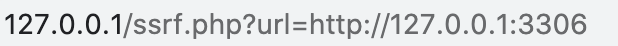
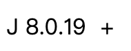

SSRF和gopher协议的简单整理
SSRF漏洞简介
01 原理
简介
SSRF，服务端请求伪造，是一种构造请求，由服务端发起请求的安全漏洞
客户端利用SSRF发送请求到服务端，服务端与内网通讯，将内网资源发给客户端
对比：CSRF发生在客户端，SSRF发生在服务器
原理
服务端提供了从其他服务器获取数据的功能，没有对内网目标地址做过滤与限制相关函数：
- file_get_contents
用于获得文件内容 - fsockopen
用于获取URL的数据，会使用socket建立tcp服务器来传输原始数据 - curl_exec
使用curl发送请求获取数据
- file_get_contents
常见地点
- WEB功能：
对外发起网络请求的地方都可能存在SSRF漏洞，如图片下载，转码，分享页面，在线翻译，文章图片收藏，未公开的API等，如果提交不同的URL回显不同，就可能存在SSRF漏洞 - URL关键字：
url、link、src、source、target、share、sourceURL、imageURL、domain等
- WEB功能：
02 应用
危害
读取文件
?url=http://www.baidu.com/robots.txt端口扫描（可以扫描内网，因为服务器就在内网）
?url:=dict://127.0.0.1:1234/访问未开放端口，脚本会显示空白或者报错
当访问开放端口，会显示banner信息判断主机是否存活
读取系统本地文件
?url:=file://路径/file内网web应用指纹识别
大多数web应用框架都有一些独特的文件和目录 ，可以通过这些文件识别出应用的类型甚至详细版本，如判断cms
?url:=http://localhost/phpmyadmin/README攻击内网应用
可以实现对内网的访问，从而可以攻击内网应用或本地机器获得shellDOS攻击
请求内网的大文件万金油协议gopher
gopher协议支持发出GET、POST请求：可以先截获get请求包和post请求包，再构造成符合gopher协议的请求。gopher协议是ssrf利用中一个最强大的协议（俗称万能协议）
简单举例
代码如下
<?php $url = $_GET['url']; $curlobj = curl_init($url); curl_exec($curlobj); ?>扫描3306端口，发现返回了mysql的版本信息


防御方法
- 限制协议
仅允许http和https请求 - 限制IP
发送的请求的IP不能是内网IP
几个内网IP的正则表达式- ^10(.([2][0-4]\d|[2][5][0-5]|[01]?\d?\d)){3}$
- ^172.([1][6-9]|[2]\d|3[01])(.([2][0-4]\d|[2][5][0-5]|[01]?\d?\d)){2}$
- ^192.168(.([2][0-4]\d|[2][5][0-5]|[01]?\d?\d)){2}$
- 限制端口
限制请求的端口为http常用的端口 - 过滤返回信息
- 统一错误信息
绕过方法
www.A.com@1.2.3.4 真正访问的地址是@后的IP地址
xip.io
xip.io这个网站的子域名会解析到对应的IP，例如192.168.0.1.xip.io，解析到192.168.0.1IP地址转化为进制
对于内网IP的过滤可以采用改编IP的写法的方式进行绕过
例如192.168.0.1这个IP地址可以被改写成：- 8进制格式：0300.0250.0.1
- 16进制格式：0xC0.0xA8.0.1
- 10进制整数格式：3232235521
- 16进制整数格式：0xC0A80001
- 合并后两位：1.1.278 / 1.1.755
- 合并后三位：1.278 / 1.755 / 3.14159267
IP中的每一位，各个进制可以混用
Apache会报400 Bad Request，但Nginx、MySQL等其他服务仍能正常工作
使用短地址
使用IDN
IDN是域名国际化，是指部分或完全使用特殊的文字或字母组成的互联网域名
03 gopher
简介
gopher协议支持发出GET、POST请求：可以先截获get请求包和post请求包，再构造成符合gopher协议的请求。gopher协议是ssrf利用中一个最强大的协议（俗称万能协议）
可以使用curl进行发送gopher
格式
gopher://127.0.0.1:70/_ + TCP/IP数据
默认端口为70，TCP/IP数据需要URL编码一个生成gopher的payload的脚本
#coding: utf-8 #author: JoyChou import sys exp = '' with open(sys.argv[1]) as f: for line in f.readlines(): if line[0] in '><+': continue # 判断倒数第2、3字符串是否为\r elif line[-3:-1] == r'\r': # 如果该行只有\r，将\r替换成%0a%0d%0a if len(line) == 3: exp = exp + '%0a%0d%0a' else: line = line.replace(r'\r', '%0d%0a') # 去掉最后的换行符 line = line.replace('\n', '') exp = exp + line # 判断是否是空行，空行替换为%0a elif line == '\x0a': exp = exp + '%0a' else: line = line.replace('\n', '') exp = exp + line print exp抓包后进行编码即可
本博客所有文章除特别声明外，均采用 CC BY-SA 3.0协议 。转载请注明出处！